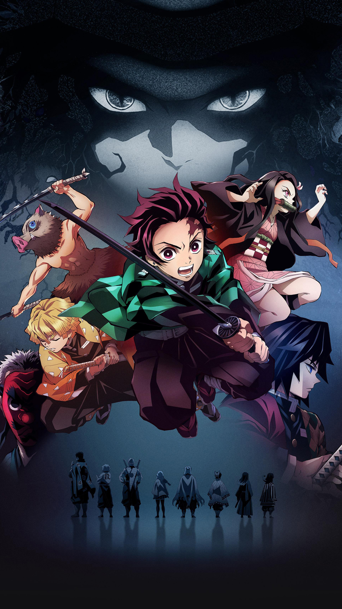
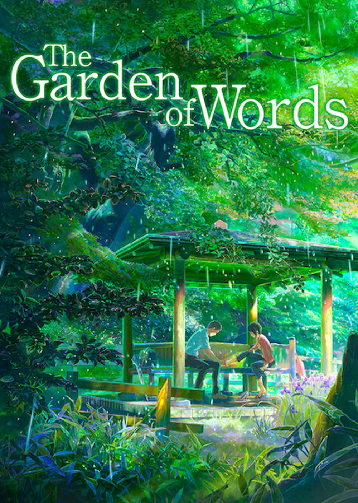

Currently Reading/Watching
Horimiya

On the surface, the thought of Kyouko Hori and Izumi Miyamura getting along would be the last thing in people's minds. After all, Hori has a perfect combination of beauty and brains, while Miyamura appears meek and distant to his fellow classmates. However, a fateful meeting between the two lays both of their hidden selves bare. Even though she is popular at school, Hori has little time to socialize with her friends due to housework. On the other hand, Miyamura lives under the noses of his peers, his body bearing secret tattoos and piercings that make him look like a gentle delinquent. Having opposite personalities yet sharing odd similarities, the two quickly become friends and often spend time together in Hori's home. As they both emerge from their shells, they share with each other a side of themselves concealed from the outside world.
BlueChair
The internet's favorite visual stand-up comic to make memes out of.
Recommended Anime/Manga
For The Sake Of Sita
A medical student passionately falls in love with a fallen goddess during his volunteer abroad in Nepal, and he desperately tries to fight off destiny to save his love.
Snailogy
I like writing jokes people don't laugh at. Lighthouse for lost souls with social anxiety, depression, gender dysphoria...and more.
Shall We Have Dinner Tonight ?
Do-hee Woo and Hae-Gyung Kim are both young and single, each with a history of broken relationships in their past. They meet one day while trying to dine alone at the same restaurant and they soon become friends who eat together every week. But with each meal, their friendship grows deeper as they help each other heal from the heartbreak they have suffered and soon they must redefine what they mean to each other.
Demon Slayer
Tanjiro is the oldest son in his family who has lost his father. One day, Tanjiro ventures off to another town to sell charcoal. Instead of going home, he ends up staying the night at someone else's house due to rumors of a demon nearby in the mountains. When he gets home the following day, a terrible tragedy awaits him.
Dead Days
Beginning on the 4th day after a zombie virus broke out, this is a story about the will to live, human instincts and our selfish desires. A thrilling tale about the survivors of a zombie apocalypse.
About Death

At the border between life and death, someone is waiting for you... "How would I had time to think about death when I haven't yet figured out life...?" About Death is a collection of poignant conversations on the inevitable rhythm of life and loss.
Solo Leveling
10 years ago, after “the Gate” that connected the real world with the monster world opened, some of the ordinary, everyday people received the power to hunt monsters within the Gate. They are known as "Hunters". However, not all Hunters are powerful. My name is Sung Jin-Woo, an E-rank Hunter. I'm someone who has to risk his life in the lowliest of dungeons, the "World's Weakest". Having no skills whatsoever to display, I barely earned the required money by fighting in low-leveled dungeons… at least until I found a hidden dungeon with the hardest difficulty within the D-rank dungeons! In the end, as I was accepting death, I suddenly received a strange power, a quest log that only I could see, a secret to leveling up that only I know about! If I trained in accordance with my quests and hunted monsters, my level would rise. Changing from the weakest Hunter to the strongest S-rank Hunter!
Recommended Movies
Your Name
Two strangers find themselves linked in a bizarre way. When a connection forms, will distance be the only thing to keep them apart?
The Garden Of Words
A 15-year-old boy and 27-year-old woman find an unlikely friendship one rainy day in the Shinjuku Gyoen National Garden.
Five Centimetres Per Second

Told in three interconnected segments, we follow a young man named Takaki through his life as cruel winters, cold technology, and finally, adult obligations and responsibility converge to test the delicate petals of love.
Weathering with You
A high-school boy who has run away to Tokyo befriends a girl who appears to be able to manipulate the weather.
Koe No Katachi
A young man is ostracized by his classmates after he bullies a deaf girl to the point where she moves away. Years later, he sets off on a path for redemption.
Let Me Eat Your Pancreas
A high school student discovers one of his classmates, Sakura Yamauchi, is suffering from a terminal illness. This secret brings the two together, as she lives out her final moments.